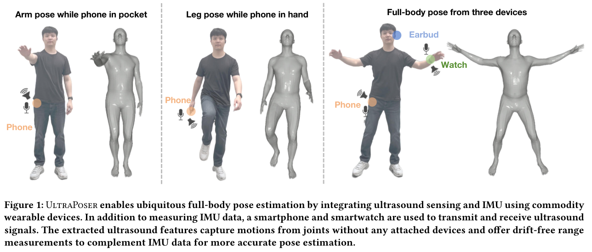
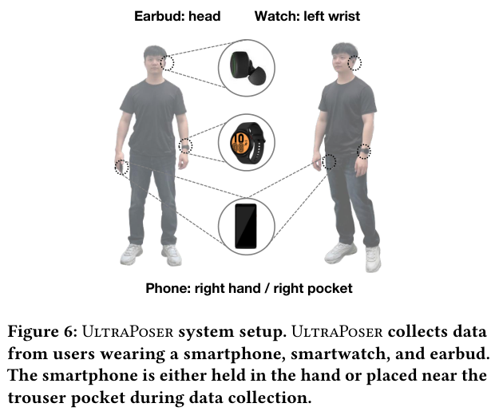
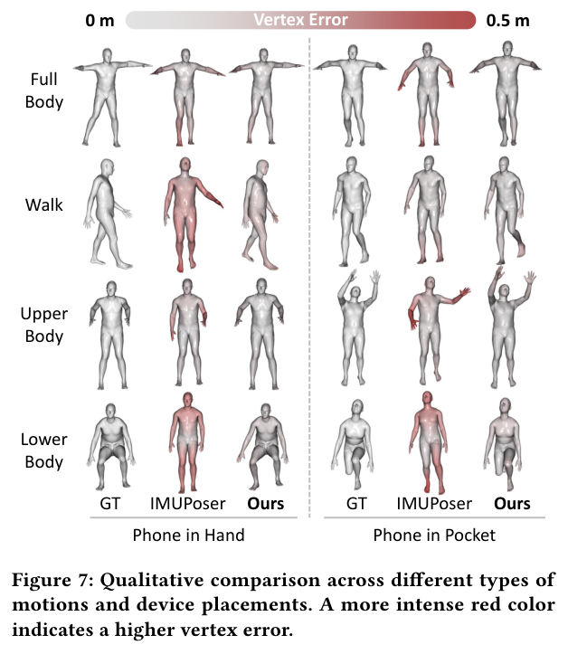
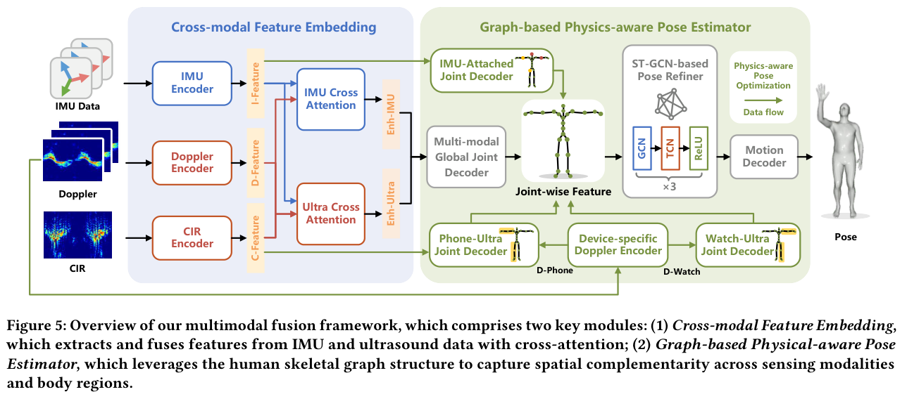

多模态感知数据集
这份 note 根据 PDF《我们关注的多模态感知数据集【更新至2025.12】》整理原有 8 个条目，并于 2026 年 10 月 20 日依据 UltraPoser 论文和官方仓库补充第 9 个条目，汇总数据集名称、模态、任务和选型建议。
说明：
- 原始材料：PDF 下载
- 前 8 个条目以原始 PDF 的表述为主，少量英文 benchmark / task 名称按原文保留；UltraPoser 条目另据其 UIST 2025 论文及官方仓库补充。
- 个别数据集在 PDF 中的介绍跨了两页，若存在“同步模态数”和“模态总数”两种说法，这里会按 PDF 原样保留并注明。
总览表
| 数据集 | 主要模态 | 主要任务 | 链接 |
|---|---|---|---|
| XRF55 | WiFi、毫米波雷达、RGB、Depth、IR、RFID | 5 大类、55 种动作，HAR | Project |
| XRF V2 | 5 个 IMUs、1 个耳机 IMU、WiFi、RGB-D-IR | 30 多个动作的动作定位，temporal action localization | GitHub |
| MM-Fi | LiDAR、WiFi、毫米波雷达、RGB 处理后的 pose | 27 种动作，姿态估计、动作识别 | Project |
| OctoNet | 11 种模态 | HAR、3DHPE | Paper / Project / Dataset |
| CUHK-X | PDF 中提到 8 种模态和 text caption；另有 7 个 synchronized modalities 的表述 | HAR、HAU、HARn，动作描述等 | Project |
| WEAR | 4 个四肢 IMUs、第一视角相机 | temporal action localization | Project |
| Ego4D / Ego-Exo4D | 第一、第三视角视频、IMUs | 动作描述、动作识别、姿态估计等 | GitHub |
| SensorQA | 与 CUHK-X、XRF V2 相关的多模态输入 | 行为问答 | GitHub |
| UltraPoser | IMU + 主动声学；Doppler 与动态 CIR 为声学特征 | 稀疏可穿戴全身三维姿态估计 | 论文 / GitHub / 数据 |
按任务怎么选
根据原始 PDF 最后一页的总结，并补充 UltraPoser 的研究方向，可以先从下面这个映射开始：
- 动作分类：
XRF55、MM-Fi、OctoNet - 动作定位：
XRF V2、WEAR - 姿态估计：
MM-Fi、OctoNet、XRF V2、XRF55、UltraPoser - 稀疏可穿戴 / IMU 与主动声学融合：
UltraPoser - 动作描述 / NLP 相关：
XRF V2、CUHK-X、SensorQA - 毫米波雷达相关：
XRF55、MM-Fi、OctoNet、CUHK-X - WiFi 相关：
XRF55、XRF V2、MM-Fi、OctoNet
逐个看
1. XRF55
- 模态：WiFi、毫米波雷达、RGB、Depth、IR、RFID
- 任务：5 大类、55 种动作，HAR
- 适合什么时候看：如果你想要一个模态覆盖很广、动作类别也比较丰富的多模态 HAR 数据集，XRF55 很适合作为起点。
- 链接：Project Website


2. XRF V2
- 模态：5 个 IMUs、1 个耳机 IMU、WiFi、RGB-D-IR
- 任务：30 多个动作的动作定位，temporal action localization
- 适合什么时候看：如果你关心动作定位，尤其想做“可穿戴 + WiFi + 视觉”的多模态时序定位任务，XRF V2 很值得重点看。
- 链接：GitHub


3. MM-Fi
- 模态：LiDAR、WiFi、毫米波雷达、RGB 处理后的 pose
- 任务：27 种动作，用于姿态估计、动作识别
- 适合什么时候看：如果你的研究同时关心无线感知和姿态估计，MM-Fi 是比较典型的桥梁型数据集。
- 链接：Project Website


4. OctoNet
- 模态：11 种模态
- 任务：HAR、3DHPE
- 适合什么时候看：如果你想研究更“全”的多模态设置，或者想比较不同传感器组合对 HAR / 3D human pose estimation 的影响，OctoNet 很有参考价值。
- 链接：Paper、Project Website、Dataset


5. CUHK-X
- 模态：PDF 一处写为
11种模态；另一处强调其有58,445个 samples、30名 participants、7个 synchronized modalities；同时又提到8种模态和 text caption 描述 - 任务：HAR、HAU、HARn 三个 benchmark，共 8 个任务；也适合动作描述等任务
- 适合什么时候看：如果你关心“感知 + 描述 + benchmark 设计”这类更综合的问题，CUHK-X 是这份 PDF 里信息量很大的一项。
- 备注：这里保留 PDF 原始表述，因为不同页面对模态数量的描述略有差异。
- 链接：Project Website


6. WEAR
- 模态：4 个四肢 IMUs（左手腕、右手腕、左脚踝、右脚踝）+ 第一视角相机
- 任务：temporal action localization
- 数据特点：
- 纯户外环境
- 18 种不同的户外健身活动
- 3 大类活动：慢跑、拉伸、力量
- 惯性部分使用 4 个 Bangle.js 开源智能手表，主要用 3D 加速度计
- 视觉部分使用头戴式 GoPro，相机向下倾斜 45 度
- 适合什么时候看：如果你想做第一视角 + 四肢 IMU 的动作定位，而且希望场景是更真实的户外运动环境，WEAR 很有特色。
- 链接：Project Website


7. Ego4D / Ego-Exo4D
- 模态：第一、第三视角视频、IMUs
- 任务：动作描述、动作识别、姿态估计等基础任务
- PDF 中的提醒：
- Ego4D、EPIC-Kitchens、Ego-Exo4D 都属于已有的多模态第一视角数据集
- 虽然它们包含 IMU 数据，但这些 IMU 往往内置在头戴式相机中
- 由于 IMU 和摄像头都在头部，信息高度相关，能提供的互补性有限
- 适合什么时候看：如果你主要做 egocentric understanding，这是绕不开的一类基准；但如果你强调“视觉之外的互补感知”，就要注意 PDF 里提到的模态冗余问题。
- 链接：GitHub


8. SensorQA
- 任务：行为问答，与
CUHK-X和XRF V2相关 - 适合什么时候看：如果你希望把多模态感知进一步推进到问答、语言理解或者更接近 agent / reasoning 的场景，SensorQA 是这份 PDF 里最偏多模态 QA 的条目。
- 链接：GitHub


9. UltraPoser
UltraPoser 是一项结合惯性与主动声学感知的全身三维姿态估计研究，并提供配套数据集。它利用手机、手表和耳机中的 IMU，以及手机和手表已有的扬声器、麦克风，从人体运动引起的声学反射中提取额外线索，改善仅依赖少量 IMU 时对未佩戴传感器肢体的估计。论文发表于 UIST 2025。
- 模态：IMU + 主动声学（超声 / 近超声）。声学输入包括 Doppler 频谱与动态信道冲激响应（CIR），二者是声学信号的不同特征表示；这里的声学不属于 WiFi、UWB 或其他无线电模态。
- 任务：稀疏可穿戴条件下的全身三维姿态估计，输出基于 SMPL 人体模型的 24 个关节旋转。
- 数据特点：10 名参与者，约 185 分钟、334,000 帧数据；论文 §1 报告 18 个动作类别，覆盖上肢、下肢、全身与行走四类。手机采用右手持握或通过口袋夹固定于右裤袋附近两种配置。帧数不等于独立动作序列数。
- 标签来源：ZED2i 相机同步采集的 RGB 图像经 4DHumans 生成 SMPL 参考姿态。RGB 用于标签生成，不是 UltraPoser 的推理输入；参考标签可能包含视觉人体恢复模型自身的误差，并非标记式光学动捕直接测得的真值。
- 适合什么时候看：研究 IMU 与主动声学融合、消费级设备全身姿态估计、稀疏传感器下的未观测关节推断，以及跨参与者和跨环境泛化。
- 评估备注：默认随机划分下完整模型的整体 MPJPE 为 3.27 cm；跨参与者测试为 8.64 cm；未见实验室测试为 7.19 cm。这些数值对应不同协议，不能用默认结果代表泛化性能。MPJPE 在根关节对齐后计算。
- 链接：论文 · PDF · GitHub · 数据下载入口
采集与标签信息见论文 §7.1、图 6（第 9 页）；评估协议与结果见§7.2–7.4、图 9、表 2–5（第 10–12 页）。



采集与融合方法
设备组合为 Google Pixel 2XL 手机（IMU 50 Hz）、Samsung Galaxy Watch4 手表（IMU 100 Hz）和左侧 ESense 耳机（IMU 50 Hz）。各路感知数据经插值、同步，与 30 Hz 的参考姿态对齐；采集前进行共同坐标系对齐和 T-pose 校准。手机与手表负责主动声学，耳机在该实验中不承担声学感知。详见论文 §7.1。
模型以 1 秒、30 帧为输入窗口，使用 BiLSTM 编码 IMU、Transformer 编码声学特征，再通过交叉注意力融合；设备佩戴位置和骨架拓扑先验参与关节解码与 ST-GCN 姿态细化。Doppler 提供运动速度线索，动态 CIR 补充距离与多径变化信息。详见论文 §6、图 5。

不同评估协议分别看
以下均为根关节对齐后的 MPJPE，单位 cm，越低越好。默认划分结果来自表 2，跨参与者及未见实验室结果来自§7.3、表 3。
| 测试设置 | UltraPoser | IMUPoser | 协议与适用范围 |
|---|---|---|---|
| 默认随机划分：手机固定于裤袋附近 | 3.21 | 4.77 | 样本按 7:1:2 划分训练、验证和测试集 |
| 默认随机划分：手机手持 | 3.33 | 4.33 | 与上行相同的默认协议 |
| 跨参与者 | 8.64 | 10.60 | 五折评估，每折 8 人训练、2 人测试 |
| 未见实验室 | 7.19 | 8.38 | 8 人在两个实验室训练 / 验证，另 2 人在第三个实验室测试；参与者与环境同时变化 |
默认协议的消融表中，完整模型整体 MPJPE 为 3.27 cm。论文报告两种手机配置的 MPJVE 平均降低 28.46%；MPJVE 是人体网格顶点位置误差，不是关节速度误差，该百分比也不代表所有指标或跨参与者性能统一提升。来源：§7.3、表 2及表 4–5。
使用边界与开放资源
- 数据来自 10 名 19–27 岁参与者，且以男性为主；固定设备组合、左右侧佩戴布局及口袋夹配置的结果，不能直接推广到任意人群、设备或自由移动的裤袋手机。
- 论文未提供完整的手机端推理延迟、持续运行功耗或电池续航实测。30 Hz 数据对齐与 16 ms 声学帧长，不等于已验证端到端实时运行。
- 根关节对齐后的关节 / 网格误差不能视为全局位置或轨迹精度。参考标签由视觉模型生成，应考虑标签误差。
- 官方仓库提供代码及数据下载入口，运行还需另行取得 SMPL 资源。数据压缩包的实际文件范围尚未核验，不承诺原始音频、RGB、全部划分文件或预训练权重均包含其中；开放范围与许可应以官方资源为准，论文出版许可不直接等同于代码 / 数据许可。
以上限制依据论文 §7.1–8与官方资源说明整理，资料核对日期为 2026 年 10 月 20 日。图表均裁自作者论文，保留图表编号及原说明；来源：Li 等，UltraPoser，UIST 2025，DOI: 10.1145/3746059.3747714，论文采用 CC BY-NC 4.0 许可。
我会怎么用这份清单
- 刚开始做多模态 HAR：先看
XRF55、MM-Fi - 重点做动作定位：先看
XRF V2、WEAR - 重点做姿态估计：先看
MM-Fi、OctoNet - 重点做稀疏可穿戴全身姿态估计，或 IMU 与主动声学融合：先看
UltraPoser，同时关注视觉参考标签的误差、设备佩戴条件，以及随机划分与跨参与者 / 未见环境协议的区别。 - 想把任务延伸到 caption / QA：优先看
CUHK-X、SensorQA - 关心无线模态：优先筛
XRF55、XRF V2、MM-Fi、OctoNet
如果后面要继续扩展，这个 note 很适合再补两列：一列写“数据规模 / 参与人数 / 环境”，一列写“适合当训练集还是验证集”。